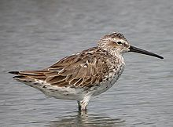
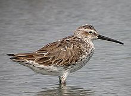

| Stilt Sandpiper | |
|---|---|
|  | |
| Conservation status | |
| Binomial name | |
| Calidris himantopus (Bonaparte, 1826) |
|
| Synonyms | |
|
Micropalama himantopus |
| Stilt Sandpiper | |
|---|---|
|  | |
| Conservation status | |
| Binomial name | |
| Calidris himantopus (Bonaparte, 1826) |
|
| Synonyms | |
|
Micropalama himantopus |
The Stilt Sandpiper, Calidris himantopus or Micropalama himantopus, is a small shorebird; it bears some resemblance to the smaller calidrid sandpipers or "stints". DNA sequence information is incapable of determining whether it should be placed in Calidris or in the monotypic genus Micropalama (Thomas et al., 2004). It appears most closely allied with the Curlew Sandpiper,[2] which is another aberrant species only tentatively placed in Calidris and could conceivably separated with it in Erolia.
The Stilt Sandpiper breeds in the open arctic tundra of North America. It is a long-distance migrant, wintering mainly in northern South America. It occurs as a rare vagrant in western Europe, Japan and northern Australia.[3]
This species nests on the ground, laying three or four eggs. The male has a display flight. Outside the breeding season, this bird is normally found on inland waters, rather than open coasts.
This species resembles the Curlew Sandpiper in its curved bill, long neck, pale supercilium and white rump. It is readily distinguished from that species by its much longer and paler legs, which give rise to its common and scientific names. It also lacks an obvious wing bar in flight.
Breeding adults are distinctive, heavily barred beneath, and with reddish patches above and below the supercilium. The back is brown with darker feather centres. Winter plumage is basically gray above and white below.
Juvenile Stilt Sandpipers resemble the adults in their strong head pattern and brownish back, but they are not barred below, and show white fringes on the back feathering.
These birds forage on muddy, picking up food by sight, often jabbing like the dowitchers with which they often associate. They mainly eat insects and other invertebrates.

{kind=link}